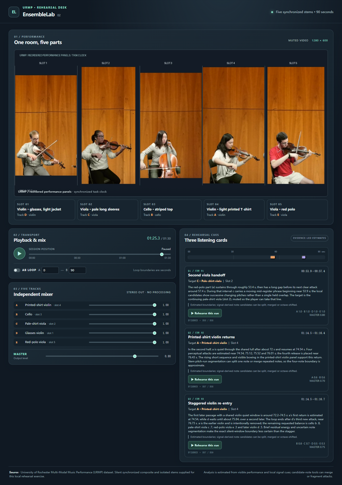
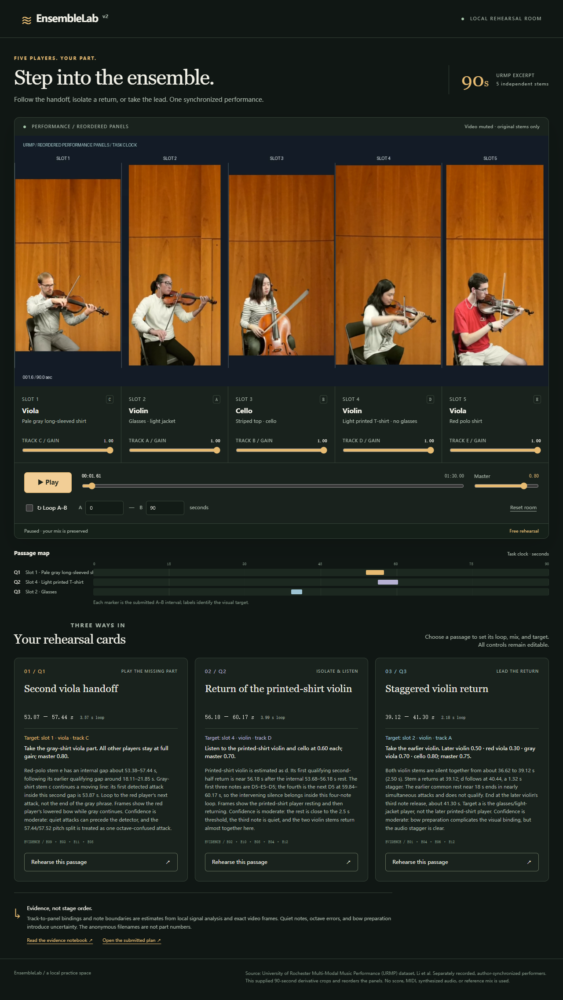

gpt-6-luna

输入90秒真实合奏素材，五幅演奏画面重新排列，五条独立音轨另行匿名。Agent需要主动选择局部证据，辨别同类乐器的音画对应，再把三条排练请求变成能实际播放、混音与循环的网页。
真实开源素材一次最终提交只读取证工具无原生音频输入reasoning = high运行日期 2026-10-30 · 两个网关别名各运行一次，提交前可取证，交付后无模型自检或返修。
URMP / K515 的源时间5–95秒。两位小提琴手、两位中提琴手与一位大提琴手。作者分别录制、同步合成，本题再裁切和重排；不是同场实录。素材保持原演奏动作与声音。
实际输入：1280×600 / 10fps 静音合成视频，画面固定为槽位1–5；音频另以五条匿名WAV提供。视频控件仅播放静音画面。
| 模型可用输入 | 格式和作用 |
|---|---|
| ensemble.mp4 | 90秒真实演奏画面，五幅画面重排，不提供原始声部顺序。 |
| track-a.wav ～ track-e.wav | 各90秒，24kHz PCM16单声道；匿名顺序与画面独立打乱。 |
| 初始证据 | 1、28、55、82秒四帧＋全曲2秒粗概览：能量、量化发声率、粗中位音高。 |
| 局部工具 | audio_window返回音高/能量/音符候选，video_probe抽取局部帧并可按槽位裁切；工具不读取官方标注。 |
| 请求 | 必须自行判断的位置 | 操作 |
|---|---|---|
| q1 · 第二次中提琴交接 | 红衫中提琴第二次至少3.5秒内部休止；从其中灰衫的第一音到红衫回归。 | 灰衫增益0，其他各1，master0.8。 |
| q2 · 指定小提琴四音回归 | 后半段印花T恤小提琴首次在至少2.5秒内部休止后回归；从第一音起音到第四音结束。 | 只该小提琴和大提琴各0.6，其他0，master0.7。 |
| q3 · 两小提琴错开进入 | 两小提琴共同休止至少2秒后，首次错开至少0.7秒进入；从较早者起音到较晚者第三音结束。 | 去掉较早者；较晚者0.5、红衫0.3、灰衫0.7、大提琴0.8，master0.75。 |
“内部休止”不含开头/结尾静音。连续同音的重新起音仍可能是新音；工具片段不等于真实音符。起止容差±0.4秒。题面未给出答案时间戳或匿名轨道ID。
# EnsembleLab v2 — investigate, bind performers, build rehearsal cards
Build a complete local rehearsal web app from a REAL90-second URMP excerpt. Five performers were separately recorded and synchronized/composited by the dataset authors. This derivative crops and REORDERS their video panels. Do not assume conventional stage order, first/second-part order, or a correspondence between anonymous WAV filenames and visual slots. No original source names, score, MIDI, ground truth or prior model answers are supplied.
## Media and useful distinctions
`/media/ensemble.mp4`: silent1280×600,10fps,90seconds, five slots numbered1..5. `/media/track-a.wav` through `track-e.wav`: synchronized24kHz PCM16 mono, same task clock, independently permuted. Identify both violinists, both violists and the cellist from evidence. The requests refer to visible clothing/instrument descriptions, not source identities. Distinguish the violinist with glasses and a light jacket from the violinist without glasses in a light printed T-shirt; distinguish the red polo-shirt violist from the other violist in a pale gray long-sleeved shirt. These descriptions are only visual selectors, not track labels. Panels do not change position during this clip.
## Three rehearsal requests
Produce exactly one actionable card for each request, q1,q2,q3. Find the timing and anonymous tracks from evidence; do not use arbitrary convenient snippets. Rest means the gap between the previous note's release and the next note's attack, excluding leading/trailing silence. Tiny gaps between notes are not rests. Use perceptually meaningful note attacks; analyzer fragments are not necessarily new notes. Boundary tolerance is0.4s; arbitrary multi-second loops are not sufficient.
**q1 / Second viola handoff.** Find the red-shirt violist's SECOND internal rest lasting at least3.5seconds. Within that rest the gray-shirt violist continues a moving phrase. Loop from the gray-shirt violist's FIRST note attack inside that rest to the red-shirt violist's next note attack. Remove the gray-shirt violist so I can play that part: its gain0, ALL other tracks1, master0.8.
**q2 / Return of the printed-shirt violin.** In the SECOND HALF of the90-second clip, find the printed-T-shirt violinist's FIRST return after an internal rest of at least2.5seconds. Loop the first FOUR consecutive notes of that return, from first attack through fourth release. Play only that violinist and the cellist at gain0.6 each; all others0, master0.7.
**q3 / Staggered violin return.** Find the FIRST passage where BOTH violinists have been silent together for at least2seconds, then one returns at least0.7seconds earlier than the other. Loop from the earlier violinist's first attack through the later violinist's THIRD note release. Remove the earlier violinist; gain of later violinist0.5, red-shirt violist0.3, gray-shirt violist0.7, cellist0.8; master0.75. Your target is the EARLIER violinist, not the later one.
## Required product behavior
1. Show the actual muted video and five labeled performer cards. Bind each anonymous audio track to its inferred visual slot and instrument. Include a compact timeline showing the three inferred rehearsal intervals and their visual target. A full transcription/piano roll is NOT required.
2. Use a real WebAudio mixer with five independent gains, then a master gain. Start no audio before explicit user gesture. Defaults: all per-track gains1, master0.8. Never synthesize the performance or add a duplicate reference mix, normalization, panning or dynamics.
3. Provide Play/Pause, seek0..90, five gains0..1, master0..1, editable A/B loop. All WAVs and video remain aligned after seek, pause/resume and loop. Changing gain must not reset playback. Clicking a rehearsal card applies THAT CARD's submitted interval and mix, enables looping and begins playback from its start. The target performer's card is visibly selected. Re-selecting another rehearsal replaces the previous rehearsal state completely. Ordinary controls must keep working afterwards.
4. Display short evidence-based reasoning and uncertainty for each card, plus source credit. Make the layout useful on desktop and mobile. Local files only; no external fetch/CDN/dependencies.
## Deliverables and schema
Submit index.html, all local CSS/JS, analysis.json and evidence.md in ONE `submit_project` call. The app must actually load and execute the submitted data; a dormant JSON is insufficient.
`analysis.json` has:
```
{"version":2,"tracks":[{"id":"a","slot":1,"instrument":"violin"},...],
"cards":[{"id":"q1","title":"...","start":12.3,"end":15.4,"target":"a",
"gains":{"a":0,"b":1,"c":1,"d":1,"e":1},"master":0.8,
"reason":"Explain what the audio and visible action support, including uncertainty.",
"evidence":[{"call":"E01","kind":"audio","track":"a","start":11,"end":17},
{"call":"E03","kind":"video","slot":1,"start":12,"end":14}]} ,...]}
```
Illustrative numbers/labels ONLY, not answers. Exactly five tracks a..e, integer slots1..5 forming a permutation; instrument violin,viola,cello or unknown. Exactly q1,q2,q3;0<=start<end<=90; gains for all five tracks and master in0..1. Evidence references actual returned evidence-call IDs, never invented ones. For an audio reference the tool must have observed the specified track and interval. For a video reference the slot must have been visible at the returned frame times. A reference should support the selected passage or the discriminating comparison, not merely list unrelated calls. Submit your best estimate even when uncertain.
## Stable DOM interface
- `[data-testid="scene-video"]`: visible actual muted HTMLVideoElement, correct aspect ratio1280/600.
- `[data-testid="play"]`:play/pause button; `seek`:range0..90; `master`:range0..1; `gain-a` through `gain-e`:ranges0..1. Respond to input/change.
- `loop-start`,`loop-end`:number inputs; `loop`:checkbox (visible or usable via associated visible label).
- `rehearse-q1`,`rehearse-q2`,`rehearse-q3`:visible buttons, apply/start the corresponding card as specified.
- `[data-role="performer"][data-slot="1"]` through5:one per video slot; `data-selected="true"` exactly for the active card's inferred target; false otherwise.
- `[data-role="rehearsal"][data-card-id="q1"]` throughq3:card containers. Show inferred start/end, target track and rationale. Keep buttons separate from gain/loop controls.
## Evidence tools and single delivery
Native audio input is unavailable on this gateway. This is TOOL-ASSISTED audiovisual reasoning, not direct hearing. Initial evidence includes four exact video frames and a coarse2-second audio overview for all anonymous stems. The overview and local signal estimates may contain octave errors, missed quiet passages, and merged or fragmented notes. They do not name instruments or performers and never read annotations.
You may perform at most TWO adaptive evidence batches before final submission (at most3 model requests total),12 read-only tool calls,32 video frames TOTAL including4 initial frames, and96 track-seconds of detailed audio analysis. `audio_window` covers at most8seconds for at most2tracks per call; it returns estimated note candidates, pitch/energy/voicing, not truth. `video_probe` returns up to8 exact frames per call over a window at most4seconds, optionally cropped to selected slots. Choose windows that distinguish competing mappings and locate requested attacks/releases; requesting everything is neither available nor needed. Batch independent calls. Do not confuse selecting reference evidence with testing a candidate product.
No browser, shell, code execution, draft writing, candidate preview, self-test, evaluator feedback, or revision tools. The FIRST submit_project call seals every file, even if broken. Do not claim you ran tests. You may submit early; otherwise use the final response to submit. Prioritize a complete working product within20,000 output tokens.
## Scoring frozen before model runs
60points reasoning: mapping/instrument15 (slot2 and instrument1 per track); requested plans36 (start3,end3,target3,correct gain/master assignment3 per card); verified relevant cross-modal evidence9 (audio,video,and temporal linkage1 each per card). Official hidden note boundaries and manually checked visual correspondence define the selected events. Evidence credit measures valid relevant observation provenance, not prose eloquence, and does not substitute for correct answers.
40points execution: media/no-autoplay4; ordinary mixer3; transport3; each rehearsal card8 (applies its OWN submitted bounds/mix/selection and actually loops/sounds correctly); sequence switching/restoration4; responsive layout/source/evidence2. The execution component measures whether the product implements the submitted plan; the reasoning component measures whether that plan answers the requests. Independent browser PCM probes check actual gains and clock alignment. There is no score feedback before sealing.
| 协议 | 本轮限制 |
|---|---|
| 产品交付 | 每模型一次submit_project，首次提交即封存。 |
| 交付前取证 | 最多两批自适应取证、12次工具调用、3次模型请求。 |
| 视频预算 | 总计32帧（含4初始帧），每次≤4秒、≤8帧。 |
| 音频预算 | 详细取证总计96轨秒，每次≤8秒且≤2轨；初始粗概览不含精确音符表。 |
| 禁止候选返测 | 模型没有浏览器、shell、草稿写入、执行、自检、评分反馈或返修工具。 |
| 输入能力边界 | 网关不接受原生音频；这是工具辅助的多模态agent交付测试。 |
| 评分 | 满分 | 验证内容 |
|---|---|---|
| 内容与决策 | 60 | 映射/乐器15，三请求起止/目标/混音36，相关证据来源9。 |
| 实际网页执行 | 40 | 普通媒体/混音/传输10，三卡24，切换/手控4，布局来源2。执行检查自己提交的计划，内容检查是否答对请求。 |
| 模型 | 总分 /100 | 内容与决策 /60 | 实际执行 /40 | 模型请求 | 取证调用 | 视频帧 | 耗时 |
|---|---|---|---|---|---|---|---|
| gpt-6-luna | 40.00 | 34.00 | 6.00 | 3 | 9 | 20 | 2.16分钟 |
| gpt-6.1-sol | 97.00 | 57.00 | 40.00 | 3 | 12 | 26 | 6.05分钟 |


原提交字节保留在records与结果包中。Pages部署副本仅将 /media/ 改为相对资源路径，未修复模型代码；逐文件变更与哈希可核对。
耗时包含网关、传输、工具和最终生成，不能当作纯模型速度。每个模型一次运行，不表示稳定排名。
按实际记录顺序浏览初始证据、每次模型请求、调用参数、工具返回和最终提交。保留错误查询与原始响应；不补写未记录的内部推理。
| 模型 | 轨迹记录 | 取证调用 | 初始/追加视频帧 | 一次提交 | 原始记录 |
|---|---|---|---|---|---|
| gpt-6-luna | 17 | 9 | 20 | 1 | trace.json |
| gpt-6.1-sol | 20 | 12 | 26 | 1 | trace.json |
Luna将a、c、d绑定到错误画面。q2选成74.54–76.43秒，真值56.167–57.496秒；q3选成74.54–76.73秒，漏掉39.153–41.289秒的首次事件。第一批三次查询超过窗口限制被拒，后续未覆盖q3真值。
Sol映射全部正确，q1与q3正确。q2把连续同音合为一音，追到更后方的音符，结束于60.17秒，比真值晚2.674秒。这与共享信号工具合并同音有关。
| 请求 | 真值 /秒 | Luna提交 /秒 | Sol提交 /秒 |
|---|---|---|---|
| q1 | 53.791–57.508 | 53.87–57.44 | 53.87–57.44 |
| q2 | 56.167–57.496 | 74.54–76.43 | 56.18–60.17 |
| q3 | 39.153–41.289 | 74.54–76.73 | 39.12–41.3 |
本测试只覆盖一个公开片段、每个网关别名一次，未做模态消融，不能证明训练数据未见或两模态缺一不可。底层模型身份未独立认证。
| 下载 | 包含内容 |
|---|---|
| 原始数据包 · 分卷ZIP | 本case所用完整源视频/源音频及元数据、任务派生输入、逐文件SHA256；不代表整个上游数据集。 |
| 完整结果与复现包 · ZIP | 题包、工具、原始响应、抽帧、封存代码、评分器、隐藏答案及评分证据。 |
| 实际题面 / 协议 | 模型实际约束；中文展示不能覆盖英文精确定义。 |
| 完整报告 / 评后公开真值 | 答案仅用于独立评测；不能纳入重测时的模型输入。 |
| 评前冻结 / 部署变换清单 | 核对输入、评分器和原始交付未发生变化。 |
| 仓库数据目录 | 归档大小、SHA256、原始成员清单与来源。 |